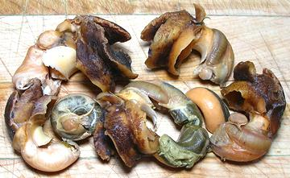

Moon Snails are a large, worldwide family of aggressive predators. The largest is Lunatia lewisii, which can grow up to 5 inches across. It is native to the Eastern Pacific from British Columbia, Canada, south to Baja California, Mexico. It primarily eats bivalves, but will eat any other molusk it can catch.
More on Culinary Snails.
The photo specimens (top photo) were purchased live from a large Asian market in Alhambra, California. The largest was 2-1/2 inches in the longest dimension and weighed 3-1/4 ounces. There was a much larger one in the tank, but I wasn't sure if it was alive or not. Yield for 1 pound 3-3/8 ounces was 5-1/2 ounces (28%) of which 4-3/8 ounces was firm meat (23%).
 The photo to the left shows what's inside a moon snail shell. It's easy to tell the edible parts from the non-edible. The edible parts are firm and the rest is pulpy. It is easy to just rub the pulp off the firm parts.
To prepare, just toss the snails into boiling water for as long as
it takes to be able to remove the innards, about 10 minutes. The
edible part can then be used in recipes or frozen for future use.